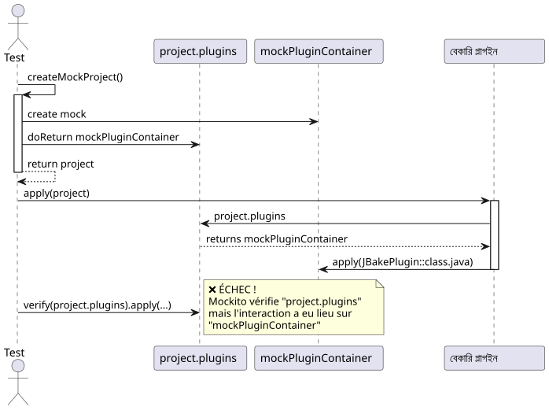
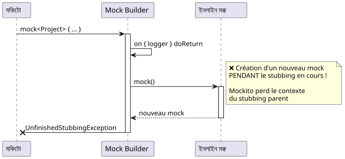
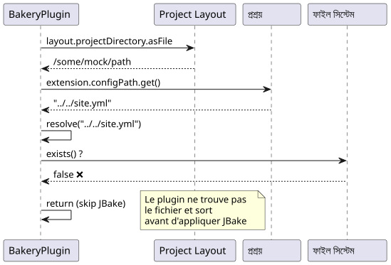
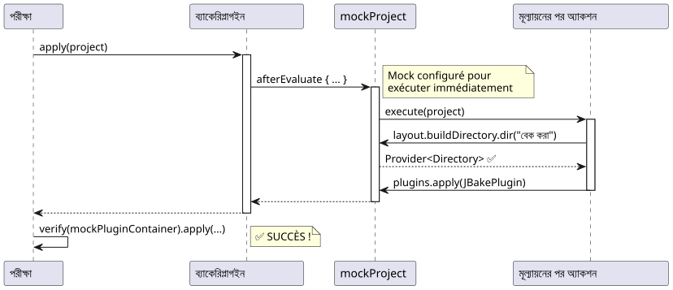
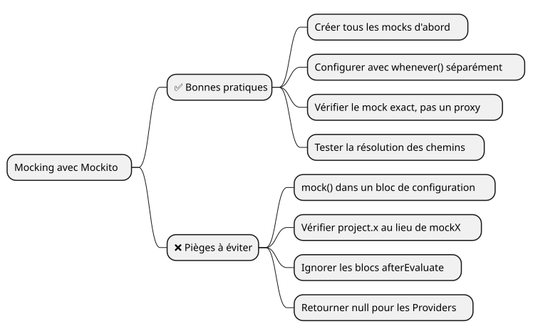

Mockito ডিবাগিং: Gradle প্লাগইন টেস্টে "Wanted but not invoked" ত্রুটিটি সমাধান করুন
Publié le 17 November 2024
ভূমিকা
গ্র্যাডল প্লাগইনের বিকাশের সময়বেকারিআমার JBake ব্লগের জন্য, মনে হচ্ছে একটি সহজ সমস্যা ছিল: একটি ইউনিট টেস্ট ব্যর্থ`Wanted but not invoked`। যেটা মনে হচ্ছে যে একটি সাধারণ বাগ, তা সত্যিই Mockito এবং Kotlin দিয়ে মকিং এর সূক্ষ্মতাগুলো বোঝার জন্য একটি আদর্শ মামলা হিসেবে সাবুত হয়েছে।
এই আর্টিকেলে, আমি আপনাকে পদ্ধতিগত ডিবাগিংয়ের একটি যাত্রায় নিয়ে যাব, যেখানে প্রতিটি সমাধান একটি নতুন সমস্যা প্রকাশ করে, শেষ সমাধান পর্যন্ত।
প্রসঙ্গ : Gradle ব্যাকারি প্লাগইন
Bakery প্লাগইনটি JBake‑এর পাশে একটি র্যাপার, যা স্ট্যাটিক সাইটের প্রকাশকে সহজ করে দেয়। এর সরলকৃত গঠন এখানে দেওয়া হল:
class BakeryPlugin : Plugin<Project> {
override fun apply(project: Project) {
val extension = project.extensions.create(
"bakery",
BakeryExtension::class.java
)
project.afterEvaluate {
if (!project.layout.projectDirectory.asFile
.resolve(extension.configPath.get()).exists()) {
println("config file does not exists")
} else {
// C'EST ICI QUE ÇA SE PASSE
project.plugins.apply(JBakePlugin::class.java)
val site = FileSystemManager.from(project, extension.configPath.get())
// Configuration de JBake...
}
}
}
}ব্যর্থ হওয়া টেস্টটি সহজ ছিল:
@Test
fun `plugin applies jbake gradle plugin`() {
val project = createMockProject()
val plugin = BakeryPlugin()
plugin.apply(project)
verify(project.plugins).apply(JBakePlugin::class.java)
}ত্রুটি :
Wanted but not invoked:
pluginContainer.apply(class org.jbake.gradle.JBakePlugin);
Actually, there were zero interactions with this mock.সমস্যা #1 : খারাপ mock যাচাই করুন
নিদান

সমস্যা: Mockito ইন্টারঅ্যাকশনগুলো ট্রেস করতে পারে না`project.plugins`যেহেতু এটাই মাত্র একটি getter যা সঠিক মককে ফেরত দেয়`mockPluginContainer`. পরীক্ষা মক ইনস্ট্যান্সে সরাসরি করা উচিত।
সমাধান
পরিবর্তন করুন`createMockProject()`দুই বস্তু ফেরত দেওয়ার জন্য :
private fun createMockProject(): Pair<Project, PluginContainer> {
val mockPluginContainer = mock<PluginContainer>()
val mockProject = mock<Project> {
on { plugins } doReturn mockPluginContainer
}
return Pair(mockProject, mockPluginContainer)
}এবং পরীক্ষা প্রস্তুত করুন:
@Test
fun `plugin applies jbake gradle plugin`() {
val (project, mockPluginContainer) = createMockProject()
val plugin = BakeryPlugin()
plugin.apply(project)
// ✅ Vérification directe sur le bon mock
verify(mockPluginContainer).apply(JBakePlugin::class.java)
}সমস্যা #2: ক্রমাগত UnfinishedStubbingException
ডাইাগনস্টিক
প্রথম সংশোধন প্রয়োগ করার পরে, একটি নতুন ত্রুটি আবিষ্কার হয়েছে :
UnfinishedStubbingException:
Unfinished stubbing detected here
Hints:
3. you are stubbing the behaviour of another mock inside
before 'thenReturn' instruction is completedসমস্যা বাধক কোডটি Mockito-Kotlin DSL সিনট্যাক্স ব্যবহার করত ছিল:
val mockProject = mock<Project> {
on { extensions } doReturn mockExtensionContainer
on { plugins } doReturn mockPluginContainer
on { logger } doReturn mock() // ❌ PROBLÈME ICI !
}
সমাধান
সৃষ্টি করাসবস্টাবিং ব্লকে বাইরে থাকা মকগুলো, তারপর সেগুলোকে দিয়ে কনফিগার করা`whenever()`:
private fun createMockProject(): Pair<Project, PluginContainer> {
// 1️⃣ Créer TOUS les mocks d'abord
val mockPluginContainer = mock<PluginContainer>()
val mockExtensionContainer = mock<ExtensionContainer>()
val mockLogger = mock<org.gradle.api.logging.Logger>()
val mockProject = mock<Project>()
// 2️⃣ Configurer les mocks séparément avec whenever()
whenever(mockProject.plugins).thenReturn(mockPluginContainer)
whenever(mockProject.extensions).thenReturn(mockExtensionContainer)
whenever(mockProject.logger).thenReturn(mockLogger)
return Pair(mockProject, mockPluginContainer)
}|
সোনার নিয়মকখনও ডাকবেন না`mock()`মক কনফিগারেশন ব্লকের মধ্যে। মককে πρώতো তৈরি করুন, তারপর কনফিগার করুন। |
সমস্যা #3: কনফিগারেশন ফাইলটি বিদ্যমান নেই
নিদান
সঠিক মকস থাকলেও, টেস্ট সব সময় ব্যর্থ hétো কারণ প্লাগিনটি কনফিগারেশন ফাইল খুঁজে পাচ্ছেনি:
// Dans BakeryPlugin.kt
if (!project.layout.projectDirectory.asFile
.resolve(extension.configPath.get()).exists()) {
println("config file does not exists")
return@afterEvaluate // ❌ Sort avant d'appliquer JBake !
}
সমাধান
মকস কনফিগার করুন যাতে পথ সমাধান কাজ করে:
private fun createMockProject(): Pair<Project, PluginContainer> {
// ... autres mocks ...
val configFile = File("../../site.yml").canonicalFile
val projectDir = configFile.parentFile
// Configuration cohérente des chemins
whenever(mockConfigPathProperty.get()).thenReturn("site.yml")
whenever(mockProjectDirectory.asFile).thenReturn(projectDir)
// Maintenant : projectDir.resolve("site.yml") existe ! ✅
}সমস্যা #4 : afterEvaluate এবং NullPointerException
নिदান
প্লাগইন ব্লকে JBake প্রয়োগ করে`afterEvaluate`, এবং অ্যাক্সেস করে`buildDirectory.dir()`:
project.afterEvaluate {
// ...
project.tasks.withType(JBakeTask::class.java)
.getByName("bake").apply {
output = project.layout.buildDirectory
.dir(site.bake.destDirPath) // ❌ NPE ici !
.get()
.asFile
}
}মকটি`buildDirectory.dir()ফিরেছিল`null.
সমাধান
বেটিমারিকারী`afterEvaluate`যাতে এটি তৎক্ষণাৎ চালায়, এবং সম্পূর্ণরূপে কনফিগার করা`buildDirectory` :
private fun createMockProject(): Pair<Project, PluginContainer> {
// ... autres mocks ...
val mockBuildDirectory = mock<DirectoryProperty>()
val buildDir = File(projectDir, "build")
// Mocker dir() pour retourner un Provider valide
whenever(mockBuildDirectory.dir(any<String>())).doAnswer { invocation ->
val path = invocation.arguments[0] as String
val mockDirProvider = mock<Provider<Directory>>()
val mockDir = mock<Directory>()
whenever(mockDir.asFile).thenReturn(File(buildDir, path))
whenever(mockDirProvider.get()).thenReturn(mockDir)
mockDirProvider
}
// Mocker afterEvaluate pour exécution immédiate
whenever(mockProject.afterEvaluate(any<Action<Project>>())).doAnswer { invocation ->
val action = invocation.arguments[0] as Action<Project>
action.execute(mockProject) // ✅ Exécution synchrone
null
}
return Pair(mockProject, mockPluginContainer)
}
সম্পূর্ণ সমাধান
এখানে ফাংশন`createMockProject()`শেষে, যা সমাধান করে সব সমস্যা :
private fun createMockProject(): Pair<Project, PluginContainer> {
// 1️⃣ CRÉER tous les mocks (pas de nested mocks !)
val mockPluginContainer = mock<PluginContainer>()
val mockExtensionContainer = mock<ExtensionContainer>()
val mockLogger = mock<org.gradle.api.logging.Logger>()
val mockTaskContainer = mock<TaskContainer>()
val mockConfigPathProperty = mock<Property<String>>()
val mockBakeryExtension = mock<BakeryExtension>()
val mockProjectDirectory = mock<Directory>()
val mockBuildDirectory = mock<DirectoryProperty>()
val mockProjectLayout = mock<ProjectLayout>()
val mockProject = mock<Project>()
// 2️⃣ CONFIGURER la résolution des chemins
val configFile = File("../../site.yml").canonicalFile
val projectDir = configFile.parentFile
val buildDir = File(projectDir, "build")
whenever(mockConfigPathProperty.get()).thenReturn("site.yml")
whenever(mockConfigPathProperty.isPresent).thenReturn(true)
whenever(mockBakeryExtension.configPath).thenReturn(mockConfigPathProperty)
whenever(mockProjectDirectory.asFile).thenReturn(projectDir)
// 3️⃣ CONFIGURER buildDirectory avec dir()
whenever(mockBuildDirectory.dir(any<String>())).doAnswer { invocation ->
val path = invocation.arguments[0] as String
val mockDirProvider = mock<Provider<Directory>>()
val mockDir = mock<Directory>()
whenever(mockDir.asFile).thenReturn(File(buildDir, path))
whenever(mockDirProvider.get()).thenReturn(mockDir)
mockDirProvider
}
// 4️⃣ ASSEMBLER le projet
whenever(mockProjectLayout.projectDirectory).thenReturn(mockProjectDirectory)
whenever(mockProjectLayout.buildDirectory).thenReturn(mockBuildDirectory)
whenever(mockExtensionContainer.create("bakery", BakeryExtension::class.java))
.thenReturn(mockBakeryExtension)
whenever(mockExtensionContainer.getByType(BakeryExtension::class.java))
.thenReturn(mockBakeryExtension)
whenever(mockProject.extensions).thenReturn(mockExtensionContainer)
whenever(mockProject.plugins).thenReturn(mockPluginContainer)
whenever(mockProject.tasks).thenReturn(mockTaskContainer)
whenever(mockProject.layout).thenReturn(mockProjectLayout)
whenever(mockProject.logger).thenReturn(mockLogger)
whenever(mockProject.projectDir).thenReturn(projectDir)
// 5️⃣ CONFIGURER afterEvaluate pour exécution immédiate
whenever(mockProject.afterEvaluate(any<Action<Project>>())).doAnswer { invocation ->
val action = invocation.arguments[0] as Action<Project>
action.execute(mockProject)
null
}
return Pair(mockProject, mockPluginContainer)
}এবং শেষ পরীক্ষা যা পাস হয় :
@Test
fun `plugin applies jbake gradle plugin`() {
val (project, mockPluginContainer) = createMockProject()
val plugin = BakeryPlugin()
plugin.apply(project)
verify(mockPluginContainer).apply(JBakePlugin::class.java) // ✅ SUCCÈS !
}শেখা পাঠ

সঠিক মকটি যাচাই করুন
// ❌ FAUX
verify(project.plugins).apply(JBakePlugin::class.java)
// ✅ CORRECT
val (project, mockPluginContainer) = createMockProject()
verify(mockPluginContainer).apply(JBakePlugin::class.java)2. নেস্টেড মক থেকে বিরত থাকুন
// ❌ FAUX - UnfinishedStubbingException
val mockProject = mock<Project> {
on { logger } doReturn mock() // Nested mock creation !
}
// ✅ CORRECT - Créer séparément
val mockLogger = mock<org.gradle.api.logging.Logger>()
val mockProject = mock<Project>()
whenever(mockProject.logger).thenReturn(mockLogger)3. মূল্যায়ন কলব্যাককে মক করা
// ✅ afterEvaluate doit s'exécuter pour les tests
whenever(mockProject.afterEvaluate(any())).doAnswer { invocation ->
val action = invocation.arguments[0] as Action<Project>
action.execute(mockProject)
null
}4. পথ সমাধান পরীক্ষা করা
// Toujours vérifier que les chemins se résolvent correctement
val extension = project.extensions.getByType(BakeryExtension::class.java)
val configPath = extension.configPath.get()
val projectDir = project.layout.projectDirectory.asFile
val resolvedConfig = projectDir.resolve(configPath)
println("Resolved config: ${resolvedConfig.absolutePath}")
println("Exists: ${resolvedConfig.exists()}")ফাইনাল টেস্ট আর্কিটেকচার
উপসংহার
যে মনে হচ্ছিল একটি সাধারণ পরীক্ষার সমস্যা ছিল, সেটি একটি দরুন কেস স্টাডির উদাহরণ হিসাবে প্রকাশিত হয় :
-
Mockito এর Kotlin সাথে সুক্ষমতাগুলো
-
সঠিক বস্তুদের মক করার গুরুত্ব
-
পরীক্ষাগুলিতে অ্যাসিঙ্ক্রোনাস কলব্যাক পরিচালনা
-
গ্র্যাডল প্লাগইনে পথ সমাধান
পদ্ধতিবদ্ধ ডিবাগিং, সমস্যা প্রতিটি স্তর বুঝে, দৃঢ় ও রক্ষণযোগ্য একটি সমাধান খুঁজে পেতে সক্ষম হয়েছে।
|
আপনার পরীক্ষার জন্য পরামর্শআপনি Mockito ব্যবহার করে 'Wanted but not invited' ত্রুটি পেলে, সদা আপনি নিজেকে জিজ্ঞাসা করুন: 1. আমি সঠিক মক যাচাই করছি কি? 2. আমার সব মক কনফিগারেশন ব্লকের বাইরে তৈরি করা হয় কি? 3. আমার কলব্যাকস সত্যিই চলছেন কি? 4. আমার পথগুলো সঠিকভাবে সমাধান হচ্ছে কি? |
সম্পদ
আপনি আপনার টেস্টে সমান সমস্যা সম্মুখীন হয়েছেন? মন্তব্যে আপনার অভিজ্ঞতা শেয়ার করুন !